Both sides went through to the Round of 32 regardless of the result, but neither treated it as a dead rubber. Arnautovic gave Austria an early lead, Belghali leveled right before half-time, Sabitzer restored Austria's advantage, Mahrez equalized and then thought he'd won it with a stoppage-time strike - only for substitute Sasa Kalajdzic to snatch a stunning equalizer just 61 seconds after coming on, sending the match to a share of the spoils that, remarkably, suited both sides perfectly.
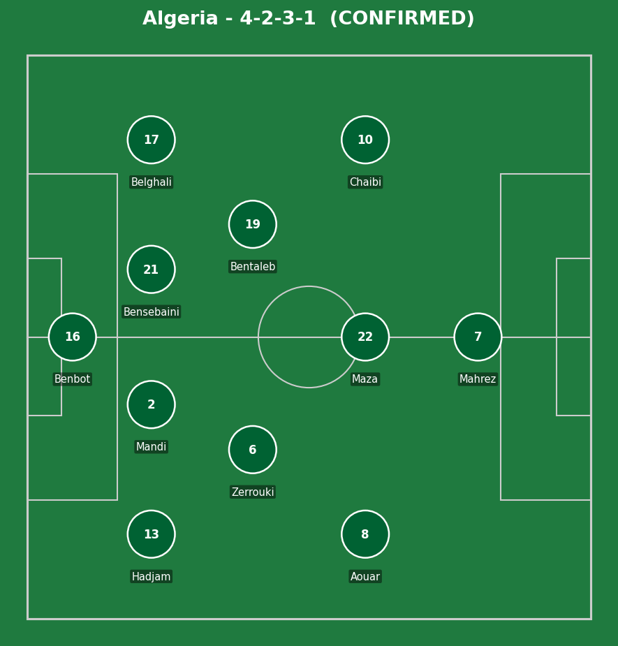
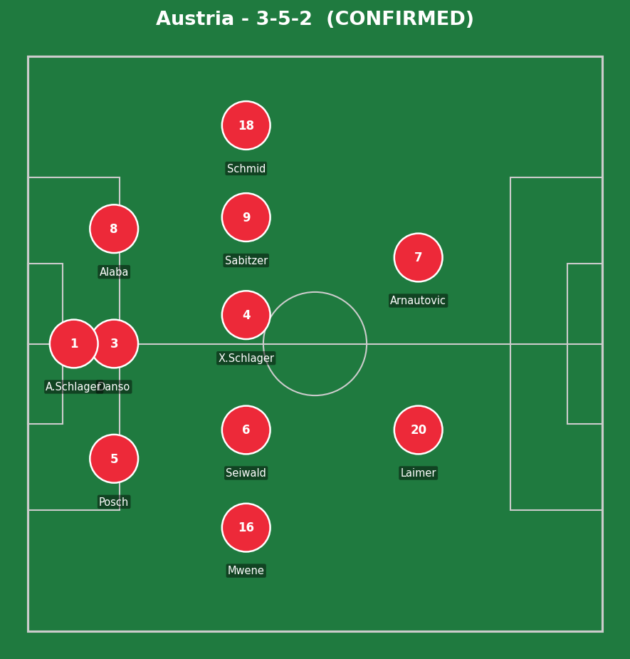
Algeria (4-2-3-1): Benbot; Hadjam, Mandi, Bensebaini, Belghali; Zerrouki, Bentaleb; Aouar, Maza, Chaibi; Mahrez. Austria (3-5-2): A. Schlager; Posch, Danso, Alaba; Mwene, Seiwald, X. Schlager, Sabitzer, Schmid; Laimer, Arnautovic.
Algeria's 60% possession reflects a side that controlled territory for long stretches, particularly down the left channel (24 entries into the final third, nearly triple their right-side count) - but Austria's directness in transition, twice scoring from quick vertical sequences (Arnautovic's run, Kalajdzic's header), proved repeatedly difficult to contain even while seeing less of the ball.
The closing 15 minutes alone produced three goals - more than any other team has managed in a single stretch this tournament - reflecting two sides pushing for a winner rather than settling for the point that, in the end, suited both of them anyway. Petkovic's bench gave Algeria the legs to break through twice late on; Rangnick's introduction of the towering Kalajdzic for the final minutes was a calculated gamble on aerial presence that paid off in the most dramatic way possible.
The key tactical moment was Rangnick's decision to bring on Kalajdzic with Austria already behind in stoppage time - a pure aerial-target substitution made purely to chase a goal, vindicated within a single minute of his introduction.
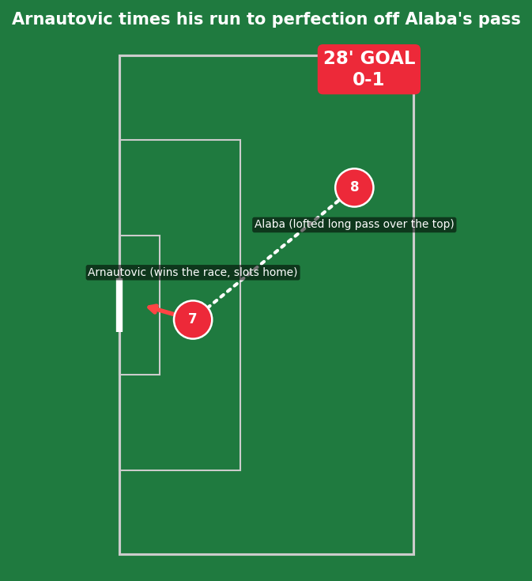
Real quality in the pass and the run alike - David Alaba's lofted ball over the top demanded perfect weight and timing, and Arnautovic, at 37 the oldest player to start a match this tournament, showed he still has the legs to win the race to it before slotting past Benbot. No defensive lapse to point to here; this was a well-executed move beating a defense playing a reasonably high line.
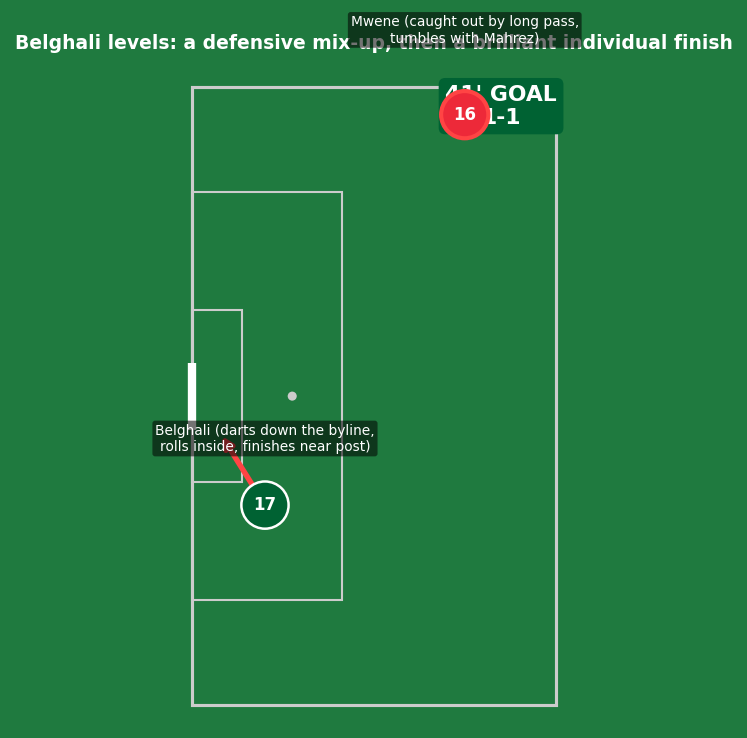
A genuine mix of fortune and brilliance. Phillipp Mwene was caught out by a long pass that bounced toward the corner flag, and as he and Mahrez tumbled together challenging for it, the loose ball broke perfectly for Belghali. From there, it was all individual quality - Belghali drove down the right byline at pace and rolled the ball inside before finishing powerfully past Schlager at his near post. The platform was a defensive mix-up; the finish itself was pure technique, and made him the youngest player to score for Algeria at a World Cup since 1982.
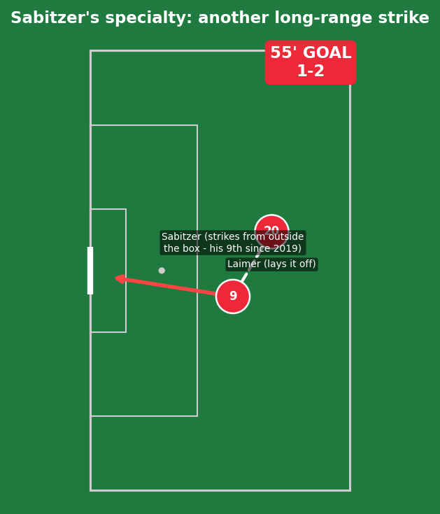
A trademark strike from distance - Sabitzer's ninth goal from outside the box for Austria since 2019, more than double any other Austrian player in that span. Genuine individual technique rather than a defensive error; Algeria's shape was reasonably set, but a strike of this quality from this range is difficult to defend regardless.
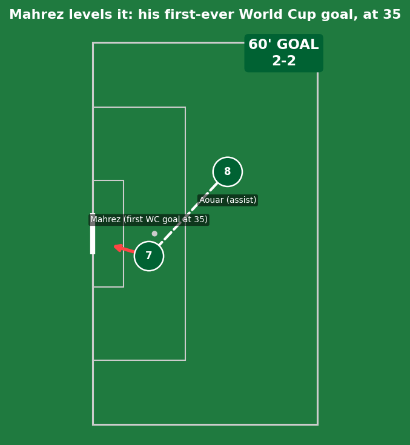
Houssem Aouar provided the assist, but the bigger story was Mahrez himself - at 35 years old and in his fourth World Cup appearance across his career, this was genuinely his first-ever World Cup goal, making him the first Algerian player to score at the tournament at 32 or older. A clean finish to cap a moment two decades of international football had been building toward.
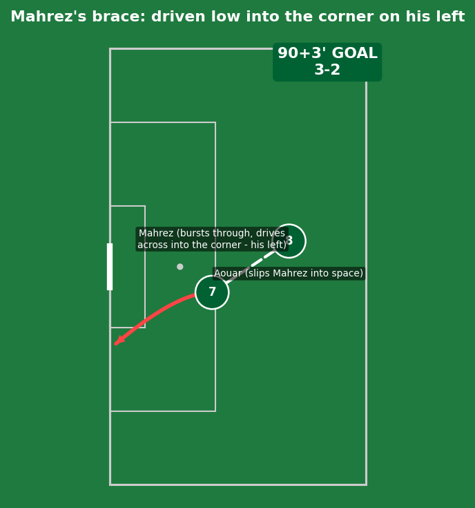
Aouar's second assist of the night was the real architect here, slipping Mahrez into space that had opened up as Austria committed numbers forward chasing an equalizer of their own. Mahrez did the rest himself, driving the ball low and hard across the goalkeeper into the corner on his own left - his second goal of the match, making him just the second Algerian ever to score twice in a single World Cup game, after Salah Assad in 1982. For a few minutes, this looked like the goal that would send Algeria through as runners-up and eliminate Austria entirely.
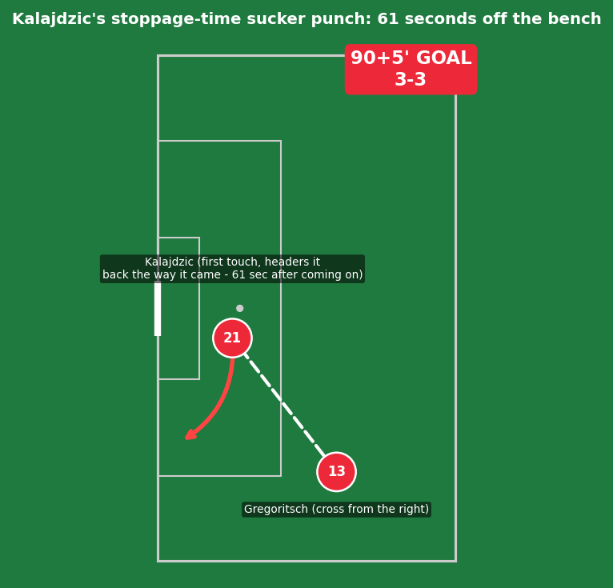
An almost unthinkable response. Sasa Kalajdzic had been on the pitch for only 61 seconds - the third-fastest goal by a substitute at this entire World Cup - when Michael Gregoritsch (who'd come on at half-time) delivered a cross from the right. Kalajdzic needed just one touch, heading the ball back across goal in the same direction it arrived from, completely against the grain of where any covering defender would expect it to go. Pure aerial presence and instinct from a player introduced for exactly this kind of moment - not a defensive collapse from Algeria, simply a near-impossible source of a goal materializing from nothing.
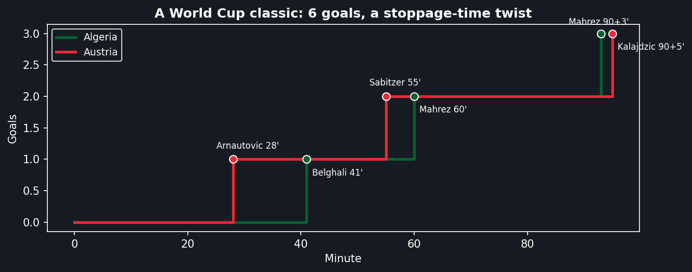
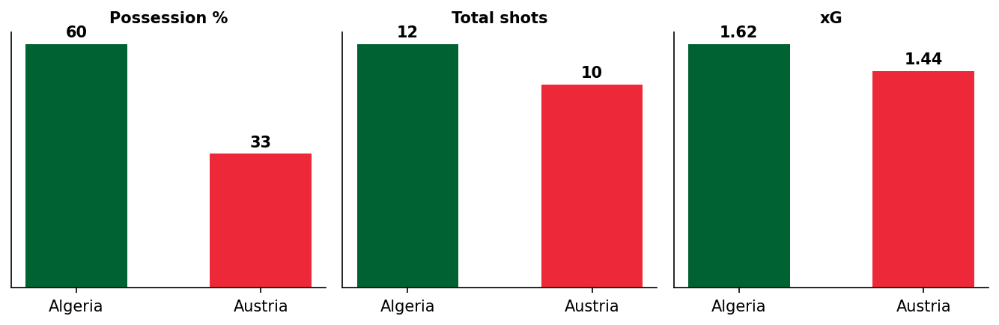
Both sides outplayed their own xG (Algeria 1.62, Austria 1.44) against a combined six goals - a rare case of finishing quality from both teams genuinely exceeding what the underlying chances suggested.
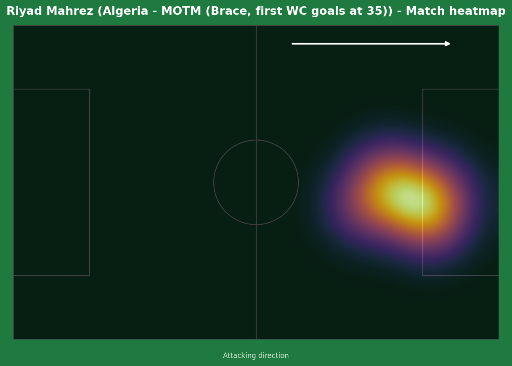
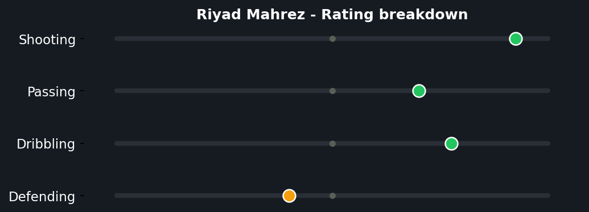
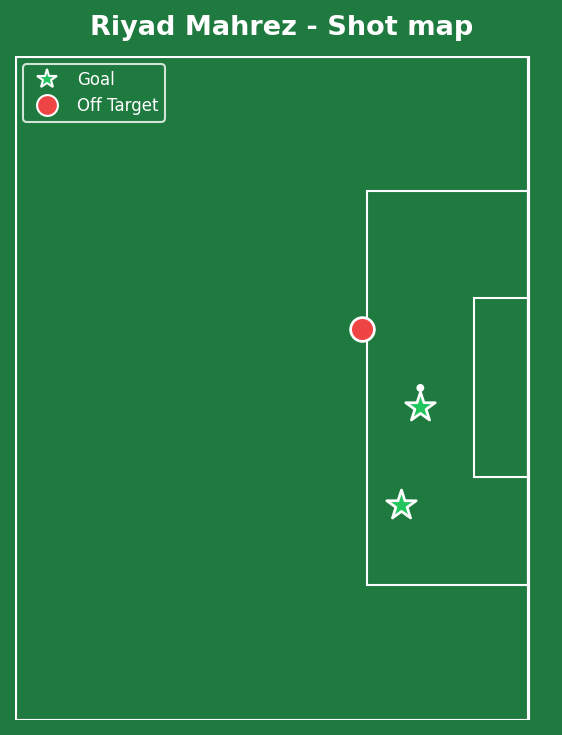
A genuinely overdue World Cup moment for one of the most accomplished players never to have scored at the tournament before this match - two goals in a single game, joining Salah Assad (1982) as the only Algerians to manage that feat. The frustration of nearly seeing his stoppage-time strike define the match, only for Kalajdzic to deny him the perfect ending seconds later, doesn't take away from a genuinely brilliant individual contribution to one of the matches of the tournament.
Illustrative reconstruction based on known event locations, not raw GPS tracking data.
Mahrez - 8.5 ⭐ MOTM (brace)
Belghali - 8.0 (goal, youngest scorer since '82)
Aouar - 7.5 (2 assists)
Benbot - 5.5 (3 conceded)
Kalajdzic - 8.0 (61-second impact goal)
Arnautovic - 7.5 (goal, oldest starter)
Sabitzer - 7.5 (trademark strike)
Mwene - 4.5 (error led to Belghali goal)
Austria advance to face Spain in the Round of 32 - their first knockout-stage appearance since 1982. Algeria advance as one of the best third-placed teams to face Switzerland, managed by their own former coach Vladimir Petkovic's old side.
💬 Reactions & Comments